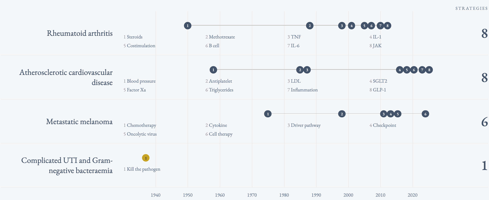

Introduction
Why is a better way needed to control infections than the centuries-old approach of antibiotic chemicals? Antibiotics fail to control many troublesome infections, may generate resistance along the way, and have destructive off-target effects on the desirable bacteria of the microbiome. Why should we accept that? Instead, we propose working in unison with the body’s natural immune system to identify the invader pathogen and disable its defenses so that the immune system can clear it away. We call our approach “bacterial defense disablers”.
Bacterial defense disablers dramatically empower the patient’s own immune system to clear infection, yet induce little disturbance to the healthy microbiome. The key: bacterial defense disablers do not any kill bacteria outright. By not exposing the gut to a killing agent, the amount of resistance generated by bacterial defense disablers falls to a minimum—many orders of magnitude less than what antibiotics generate. The gut is preserved, which in turn eliminates tolerability problems and the harmful side effects caused by many antibiotics. Because the therapeutic mode of action differs from all previous medications, it works whether pathogens have previously developed resistance to antibiotics or not.
Beyond this, bacterial defense disablers can treat infectious syndromes where antibiotics have always struggled, even in the days before antibiotic resistance. The most difficult chronic infections often defeat antibiotic treatment by the infectious agents embedding themselves inside host cells, where antibiotics typically cannot reach, and where immune clearance is of limited efficacy. For example, antibiotics often cannot treat recurrent urinary tract infections (UTIs), which persist because bacteria shelter inside bladder cells, making themselves inaccessible to antibiotics.
Bacterial defense disablers will bring great benefit to all infection control stakeholders. Patients will benefit from new, non-antibiotic options, especially in the many settings where antibiotics do not work well today (resistant infections, chronic infections, non-life-threatening infections, intracellular infections, and infections during cancer care). Physicians gain a new, patient-friendly therapeutic option. The stewardship community can support an effective, non-antibiotic option that allows the most critical antibiotics to be reserved for the dire situations where they are most needed.
Importantly, bacterial defense disablers will also reward financial investors with a sizable market opportunity. Bacterial infection remains a health threat approximately the size of cancer (see Figure 1). Bacterial resistance makes the problem worse, even in developed countries, and treatment failure rates have risen to shockingly high levels and cost our health systems dearly. Modern and expensive medical procedures assume functioning infection control: surgery, cancer care, transplantation, and auto-immune care. In many of these settings, it is understood that antibiotics are a poor way to meet patient need. This is particularly true in the emerging field of immuno-oncology. Attempts to develop more sophisticated antibiotics are unlikely to work in any of these settings, because the problems are too fragmented for antibacterials to solve. Bacterial defense disablers offer a new strategy that can solve these fragmented problems by harnessing the comprehensive power of the immune system. Bacterial defense disablers are a general solution with numerous clinical and market opportunities.
Bacterial defense disablers are not a theoretical idea: Unison Medicines has developed a bacterial defense disabler that has demonstrated the ability to work with the immune system to defeat infection in reliable models. Our agents are administered orally and show no discernible effect on the healthy microbiome. They work against the most challenging, recalcitrant, and resistant Gram-negative bacteria designated as priority pathogens by the WHO and CDC.
We are excited by the observation that when other fields have developed new treatment paradigms, they have rewarded investors with healthy returns. To make the parallel explicit, innovators in rheumatoid arthritis, cardiovascular disease, and melanoma developed novel treatment paradigms that were not simply better versions of steroids, statins, and chemotherapy. Instead, they found novel treatment strategies to address the underlying medical need, and in doing so, created blockbuster medications (see Figure 2). Defense disablers are the way to repeat this playbook for infection control, which has equally great—if not greater—unmet need.

Bacterial defense disablers will solve infection control problems in ways a new antibiotic never could. They will underwrite medicine in the 21st Century in the way that antibiotics did in the 20th Century.
Let us tell you how.